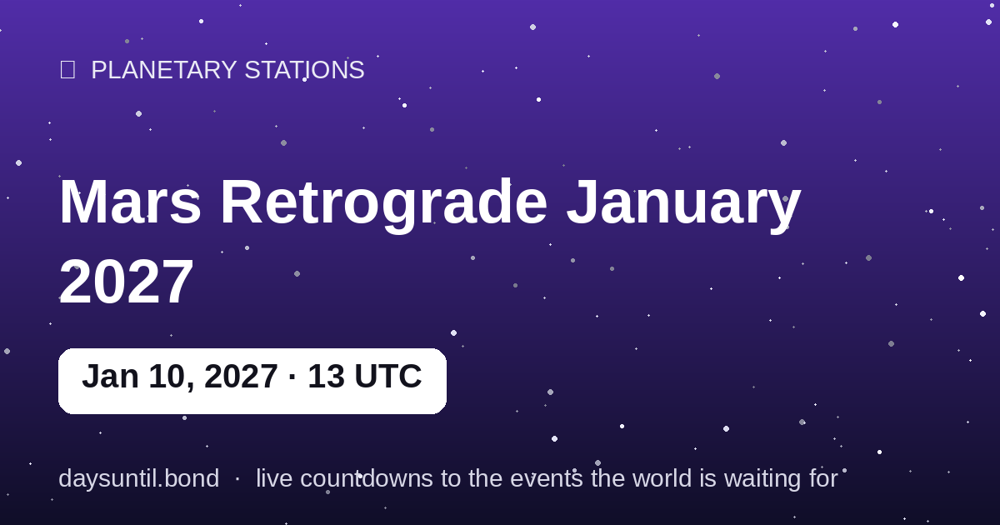

How Many Days Until Mars Retrograde January 2027?
Mars Retrograde January 2027 falls on Sunday, January 10, 2027.
As of November 22, 2026: 49 days to go — 7 weeks and 0 days, 35 weekdays (14 weekend days), about 1,176 hours.

Quick facts
| Station moment (UTC) | January 10, 2027 · 13:41 |
|---|---|
| Zodiac position | 10°25' Virgo |
| Direction | Turning Rx |
| Duration of phase | ~11 weeks |
About Mars Retrograde January 2027
Mars stations retrograde on January 10, 2027 at 13:41 UTC, at 10°25' Virgo — computed to the minute with our own Keplerian ephemeris.
Mars retrograde is the two-year energy audit: drive, desire, temper and stamina all get re-priced. It happens roughly every 26 months. The station is the turning point itself: the day the planet's apparent motion reaches zero before reversing. In tradition, days around a station carry the event's themes most intensely — decisions made at a station are said to set the tone for the whole season that follows. Full guide with a free chart checker: the Mars retrograde guide on Prophetic.
Your Mars Retrograde January 2027 countdown milestones
It is easier to plan against fixed points than against a number that moves. These are the dates on which the countdown to Mars Retrograde January 2027 passes each marker between now and the day itself — the last one falls on Saturday 09 January, when there will be 1 day left.
| Milestone | Day | Date | Remaining |
|---|---|---|---|
| 30 days | Friday | 11 December 2026 | 30 days to go |
| 14 days | Sunday | 27 December 2026 | 14 days to go |
| 7 days | Sunday | 03 January 2027 | 7 days to go |
| 3 days | Thursday | 07 January 2027 | 3 days to go |
| 1 days | Saturday | 09 January 2027 | 1 day to go |
How the remaining time breaks down
49 days is the headline, but it is rarely the number that helps. 35 of those are weekdays and 14 fall on a weekend, which is the split that matters if you are planning around work. It is 7 weeks and 0 days, or roughly 1.6 months, or about 1,176 hours.
| Unit | Until Mars Retrograde January 2027 |
|---|---|
| Days | 49 |
| Weeks | 7 weeks and 0 days |
| Months (approx) | 1.6 |
| Weekdays | 35 |
| Weekend days | 14 |
| Hours | 1,176 |
| Sleeps | 49 |
Working days are Monday to Friday and do not subtract public holidays, which vary by country and employer — the full month-by-month split is on our weekday page for Mars Retrograde January 2027.